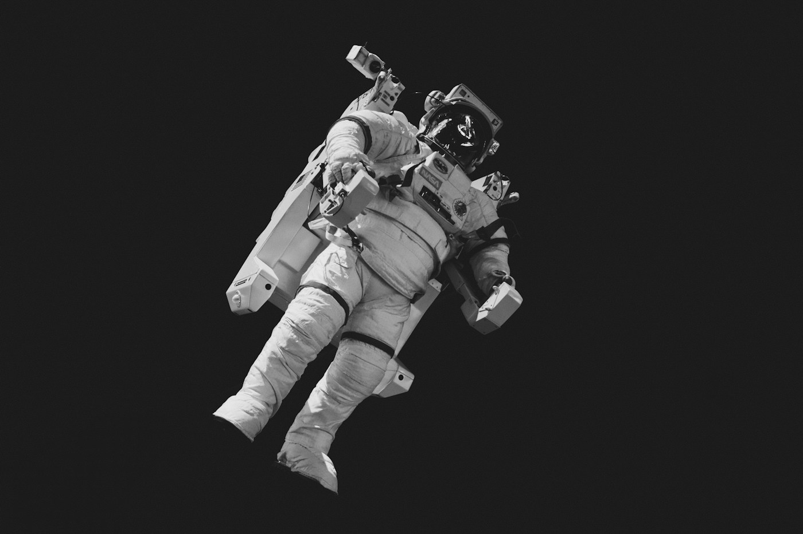
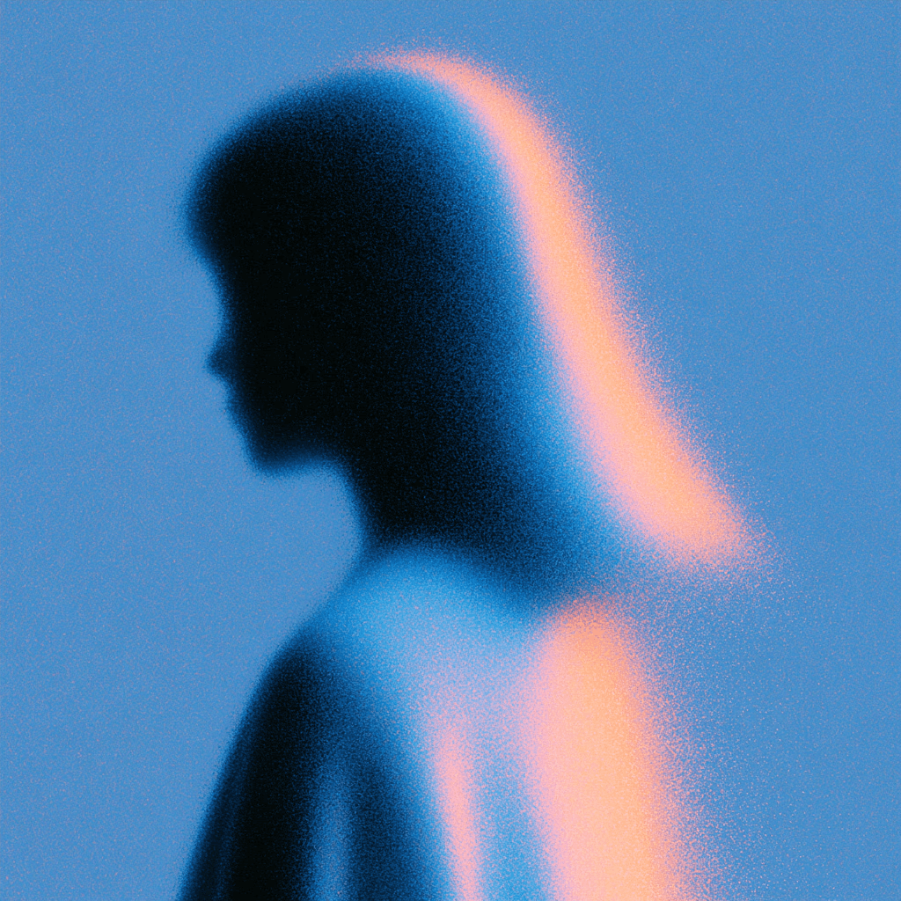
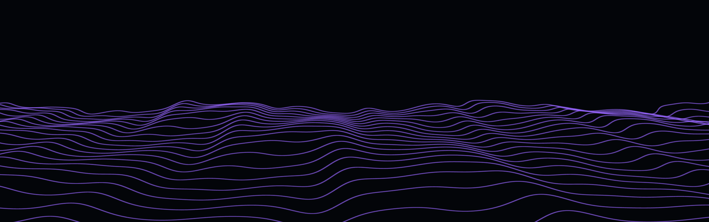

01 / DEPARTURE • 400 KM ABOVE HOME
Leave Earth Behind
Beyond the familiar. Beyond the possible. A journey into the beautiful unknown.
BEGIN THE ODYSSEY
01 / DEPARTURE • 400 KM ABOVE HOME
Beyond the familiar. Beyond the possible. A journey into the beautiful unknown.
BEGIN THE ODYSSEY02 / THE INNER FRONTIER
A billion ancient fragments. A silent, restless dance. Navigate the remnants of worlds that never were.
03 / WORLDS WITHOUT EDGES
Slow down. In the realm of giants, storms outlive civilizations and gravity writes its own rules.

04 / THE POINT OF NO RETURN
Where light falls silent. Where time comes undone. Everything leads to the unknown.
